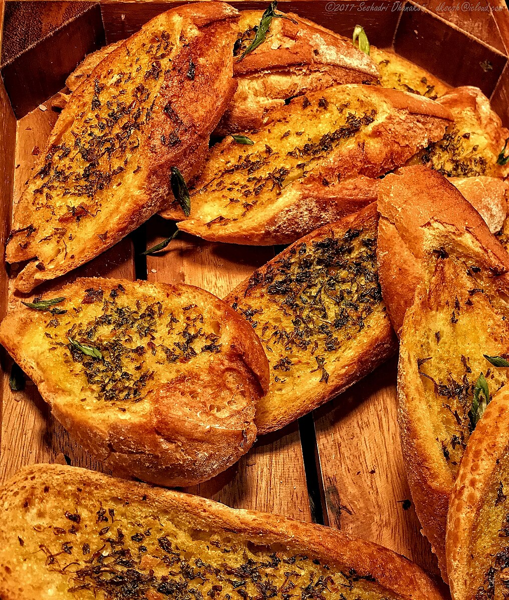

Garlic Bread
Home

©2017 Seshadri Dhanakoti
How to make garlic bread
Garlic bread is both comforting and flavorful. Its combination of simple ingredients make it
a beloved side dish at any restauraunt. The aroma of garlic bread welcomes you in at every bite.
This dish is too good to only enjoy at restauraunts, so let's make our own.
Ingredients
- French Bread Loaf
- Butter
- Garlic Clove, minced
- Olive Oil
- Salt
- Parsley
- Garlic Powder
Steps
- Preheat Oven
- Mix olive oil, butter, minced garlic, parsley, and garlic powder together
- Cut loaf into slices, spread mixture onto bread, and place on baking sheet
- Bake in oven for about 30 minutes